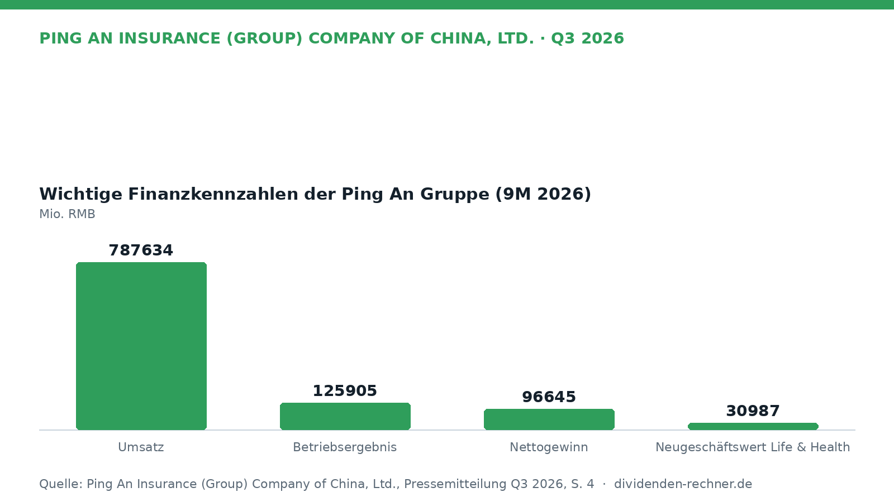
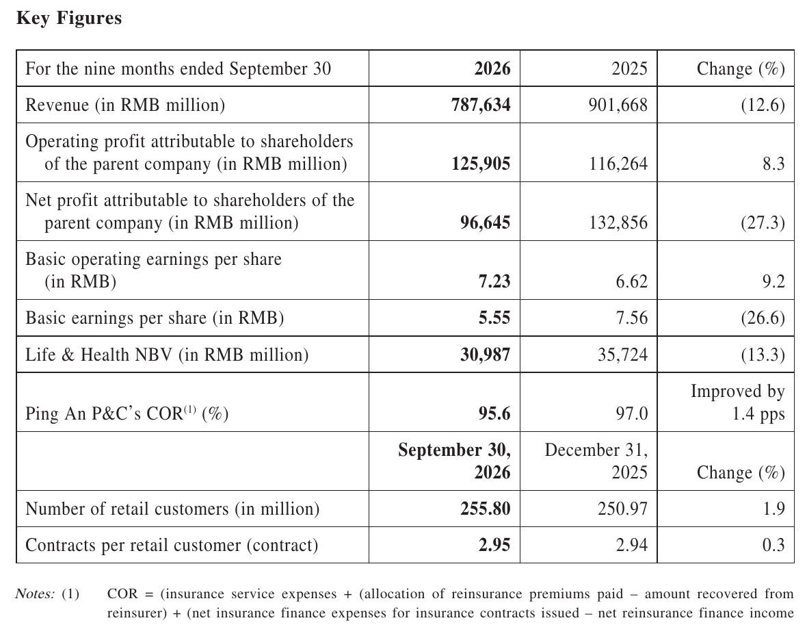
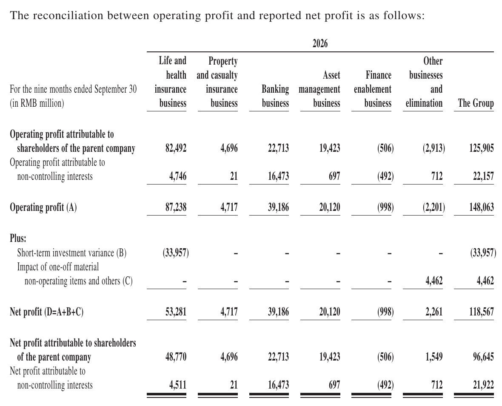
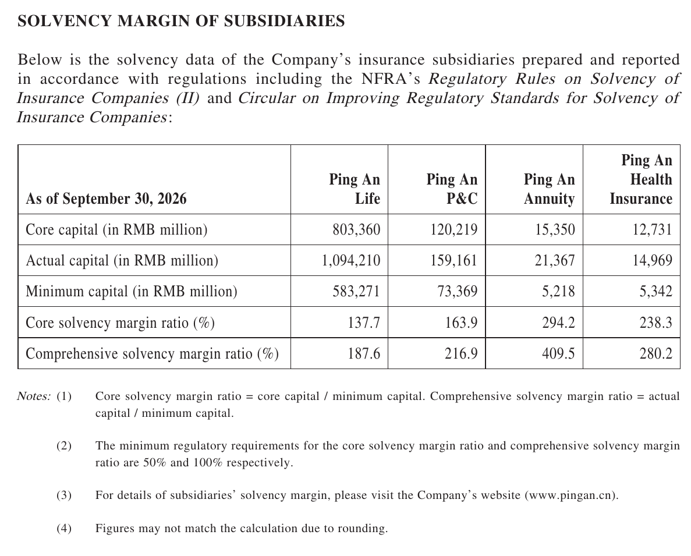

Quartalszahlen

Ping An steigert operatives Ergebnis auf 125,9 Milliarden RMB
Ping An Insurance steigert das operative Ergebnis in den ersten neun Monaten 2026 um 8,3 %, leidet jedoch unter Marktverlusten beim Nettogewinn.
Kurz gesagt
Umsatz: 787.634 Mio. RMB (-12,6 %)
Gewinn: 96.645 Mio. RMB (-27,3 %)
- Entwicklung: Der operative Gewinn stieg dank Stärke im Kerngeschäft, während der berichtete Nettogewinn durch Marktschwankungen nachgab.
- Geschäftstreiber: Stabile Zuwächse in der Lebensversicherung und bei der Banktochter stützten den operativen Verlauf.
- Knackpunkt: Niedrigere Investmenterträge und ein Rückgang beim Neugeschäftswert bremsten das Gesamtergebnis.

Eigene Darstellung nach Daten aus: Ping An Insurance (Group) Company of China, Ltd., Quartalszahlen Q3 2026 vom 2026-10-28.Ping An wächst operativ, Marktverluste drücken den Nettogewinn
Operatives Wachstum trotzt Marktturbulenzen
Der chinesische Finanzkonzern Ping An verzeichnete in den ersten neun Monaten 2026 eine solide operative Entwicklung. Während das laufende Geschäft in den Kernsparten zulegen konnte, drückten Wertschwankungen am Kapitalmarkt auf den ausgewiesenen Nettogewinn.
Segmententwicklung im Überblick
Der Gesamtumsatz der Gruppe ging im Vergleich zum Vorjahreszeitraum um 12,6 % auf 787.634 Mio. RMB zurück. Das operative Ergebnis für die Aktionäre kletterte dagegen um 8,3 % auf 125.905 Mio. RMB. Der unbereinigte Nettogewinn sank jedoch um 27,3 % auf 96.645 Mio. RMB, was vor allem auf stichtagsbezogene Bewertungseffekte bei Kapitalanlagen zurückzuführen ist.

Wichtigste Finanz- und Geschäftskennzahlen. Quelle: Ping An Insurance (Group) Company of China, Ltd., Quartalszahlen Q3 2026 vom 2026-10-28, S. 4. Ausschnitt nur zugeschnitten, sonst unverändert.In der Sparte Lebens- und Krankenversicherung legte der operative Gewinn um 5,7 % auf 87.238 Mio. RMB zu. Der Neugeschäftswert verringerte sich zeitgleich auf 30.987 Mio. RMB. Die Sachversicherung verbesserte ihre kombinierte Schaden-Kosten-Quote um 1,4 Prozentpunkte auf 95,6 % und steigerte damit die Profitabilität im Unterrechnungsgeschäft. Die Banktochter Ping An Bank erzielte einen Nettogewinn von 39.186 Mio. RMB, was einem Zuwachs von 2,2 % entspricht.

Überleitung vom Betriebsergebnis zum Nettogewinn nach Segmenten. Quelle: Ping An Insurance (Group) Company of China, Ltd., Quartalszahlen Q3 2026 vom 2026-10-28, S. 9. Ausschnitt nur zugeschnitten, sonst unverändert.Solide Solvabilität der Tochtergesellschaften
Die Versicherungstöchter des Konzerns weisen weiterhin eine solide Kapitalausstattung auf. Bei der Ping An Life lag die Kernsolvabilitätsquote Ende September 2026 bei 137,7 % und die Gesamtsolvabilitätsquote bei 187,6 %. Die Sachversicherungstochter Ping An P&C erreichte eine Gesamtsolvabilitätsquote von 216,9 %. Damit liegen alle Einheiten deutlich über den gesetzlich geforderten Schwellenwerten.

Solvabilitätsquoten der Versicherungs-Tochtergesellschaften. Quelle: Ping An Insurance (Group) Company of China, Ltd., Quartalszahlen Q3 2026 vom 2026-10-28, S. 25. Ausschnitt nur zugeschnitten, sonst unverändert.Ausblick und strategische Ausrichtung
Für die kommenden Monate setzt Ping An weiterhin auf die Verknüpfung von Finanzdienstleistungen mit Gesundheits- und Pflegeangeboten. Zunehmende Bedeutung nimmt dabei der Einsatz von Systemen der künstlichen Intelligenz in der Kundenbetreuung und Risikoprüfung ein. Risiken bleiben vor allem im volatilen Marktumfeld für Kapitalanlagen und in der allgemeinen Konjunkturentwicklung im Heimatmarkt bestehen.
Quelle: Ping An Insurance (Group) Company of China, Ltd., Quartalszahlen Q3 2026 vom 2026-10-28. Rechenwege eigene Berechnung. Keine Anlageberatung.
Hinweis: Dieser Text dient der allgemeinen Information und ist weder Anlage-, Steuer- noch Rechtsberatung. Kapitalanlagen sind mit Risiken verbunden, bis hin zum Totalverlust.